Credits
Who took the photos on this site, and the company behind it.
Photos
None of the photos on this site are ours. Each is used under the licence shown, with thanks to the photographer.
-

Shenzhen Bay towers and a lit footbridge at blue hour, Nanshan.
By Sparktour, CC BY-SA 4.0, via Wikimedia Commons.
Adapted: cropped and resized. Used on Consultancy.
-
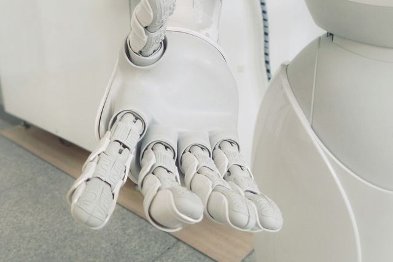
A white robot hand, palm up.
By Franck V., under the Unsplash License, via Unsplash. Credited with thanks.
Adapted: cropped and resized. Used on Consultancy.
-
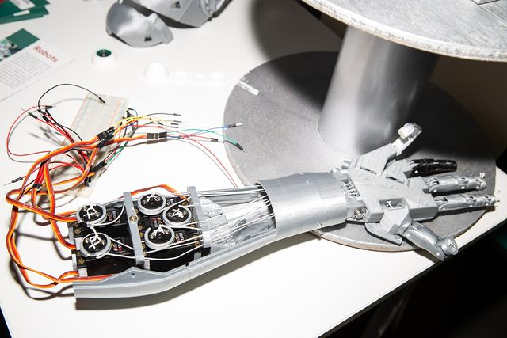
An open robot hand with servo wiring on a workbench.
By Jérémy Barande, CC BY-SA 2.0, via Wikimedia Commons.
Adapted: cropped and resized. Used on Consultancy.
-
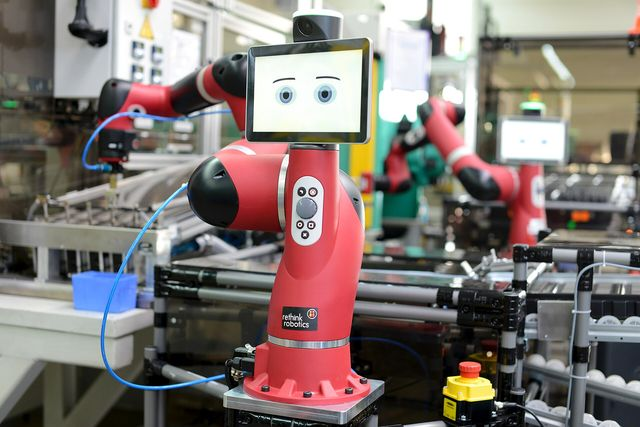
A red Sawyer cobot tending a machine on a factory line.
By Jeff Green/Rethink Robotics, CC BY 4.0, via Wikimedia Commons.
Adapted: cropped and resized. Used on Consultancy.
-
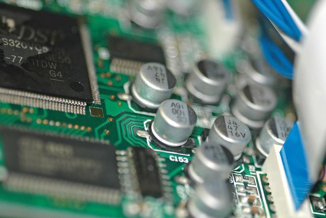
Capacitors and chips on a circuit board.
By Mercado Viagens, CC BY 2.0, via Wikimedia Commons.
Adapted: cropped and resized. Used on Consultancy.
-
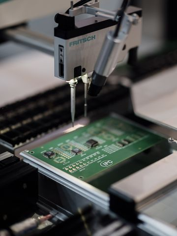
A pick-and-place head setting components on a circuit board.
By Shixart1985, CC BY 2.0, via Wikimedia Commons.
Adapted: cropped and resized. Used on Consultancy.
-
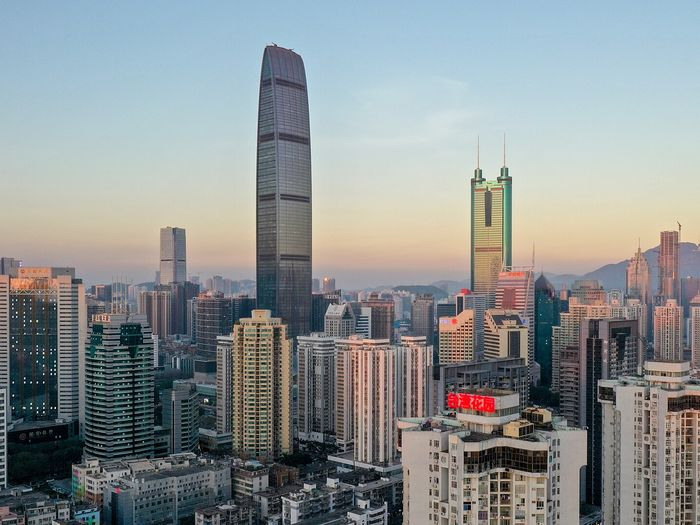
The Luohu skyline at sunset, with KK100 and Shun Hing Square.
By Charlie fong, CC BY-SA 4.0, via Wikimedia Commons.
Adapted: cropped and resized. Used on Consultancy.
-
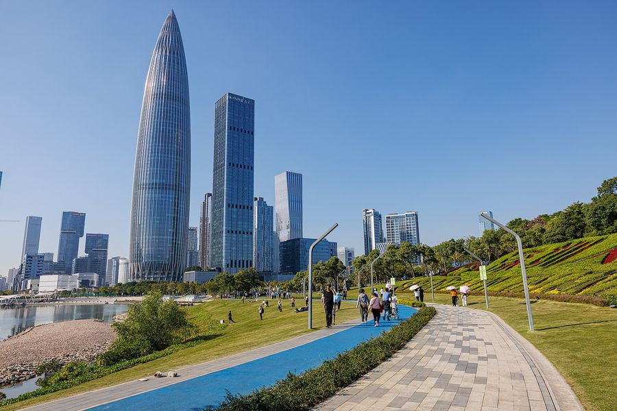
Shenzhen Bay Talent Park, with the China Resources tower and a cycle path.
By Dinkun Chen, CC BY-SA 4.0, via Wikimedia Commons.
Adapted: cropped and resized. Used on Consultancy.
-
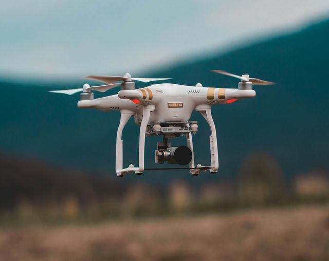
A drone hovering over a field.
By Jared Brashier, under the Unsplash License, via Unsplash. Credited with thanks.
Adapted: cropped and resized. Used on Build Sprint.
-
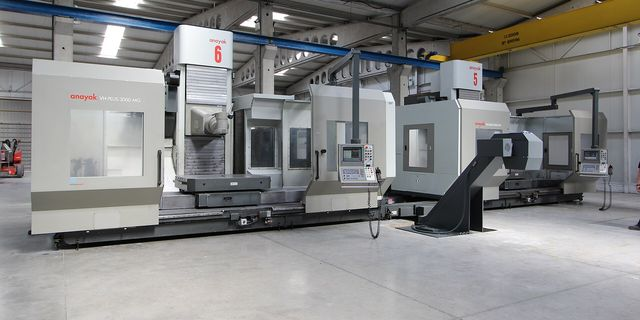
A hall of CNC milling machines.
By Ana 2016, CC BY-SA 4.0, via Wikimedia Commons.
Adapted: cropped and resized. Used on Build Sprint.
-
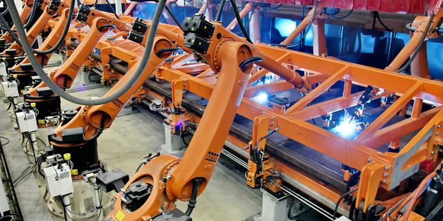
A line of welding robots on a production line.
By AKomkova, CC BY-SA 4.0, via Wikimedia Commons.
Adapted: cropped and resized. Used on Build Sprint.
-
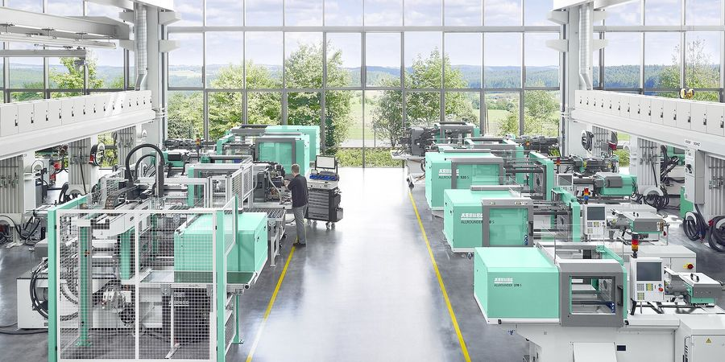
An injection moulding hall with a glass wall onto fields.
By Arburg, CC BY-SA 4.0, via Wikimedia Commons.
Adapted: cropped and resized. Used on Build Sprint.

.jpg){kind=link}


.jpg){kind=link}


Company details
DELTA & BAY LTD
Registered in England and Wales, company no. 17524691.
Registered office: 1 Oxberry Avenue, London SW6 5SP, England.
View on Companies HouseCompany names or logos that appear in photos belong to their owners. They don’t mean that company works with us.